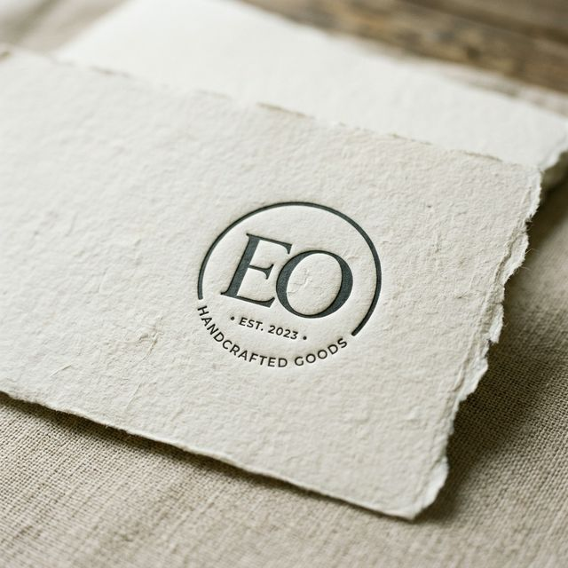
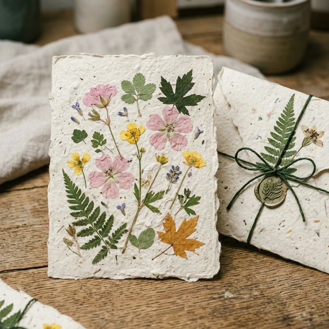
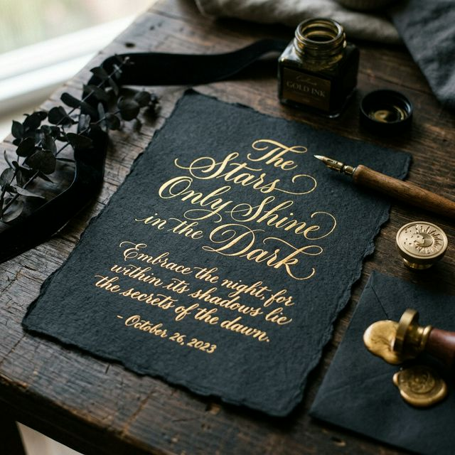

The Archive Edition
Exquisite Weight. Deep Impression.
Our most rigorous, dense cotton papers, created specifically for fine art printmakers and heavy hit letterpress.
View The ArchiveCurated Sets
Swipe to explore
Minimalist Suite

Botanical Ed.

Midnight Ink
The Manifesto
A return to slowness. A departure from the digital ephemeral. We do not manufacture; we cultivate.
In a world of rigid perfection, Foliage Studio champions the accidental. The beauty of a deckled edge is that it cannot be precisely programmed. It is born from water pulling away from pulp, a natural separation that leaves a feathered, untamed border upon every single sheet.
It demands to be felt. Your fingers understand the value before your eyes process the shade. The weight matters. The absorbency matters. We dedicate our craft to ensuring that when you press ink or foil into these fibers, they hold not just your words, but the gravity of your intent.